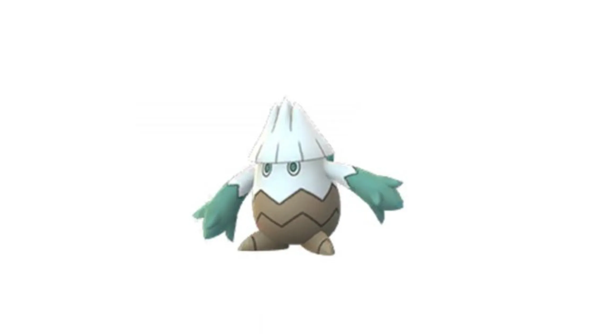
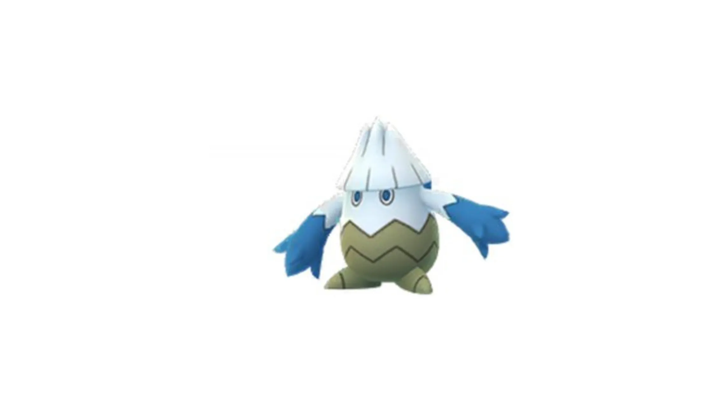
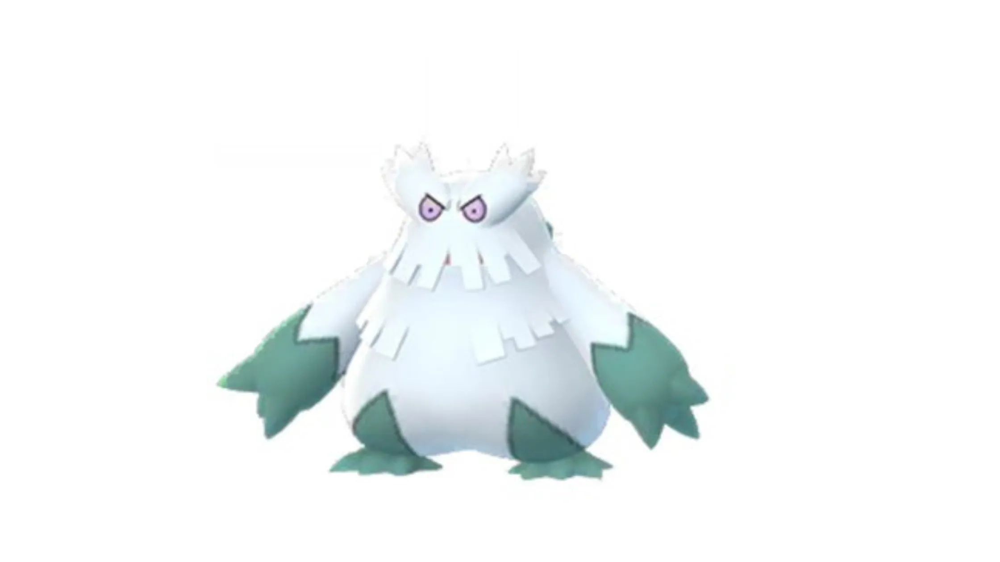
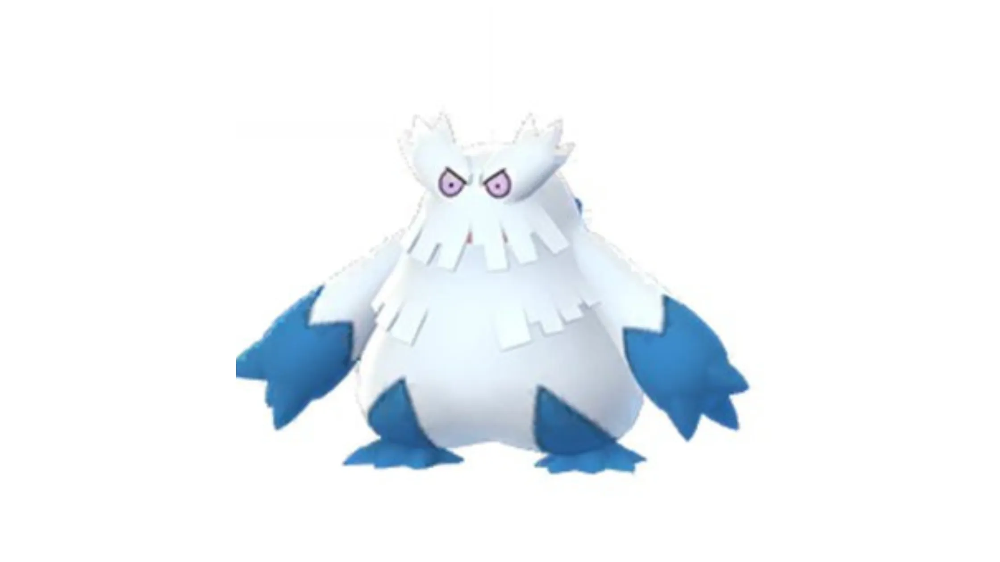
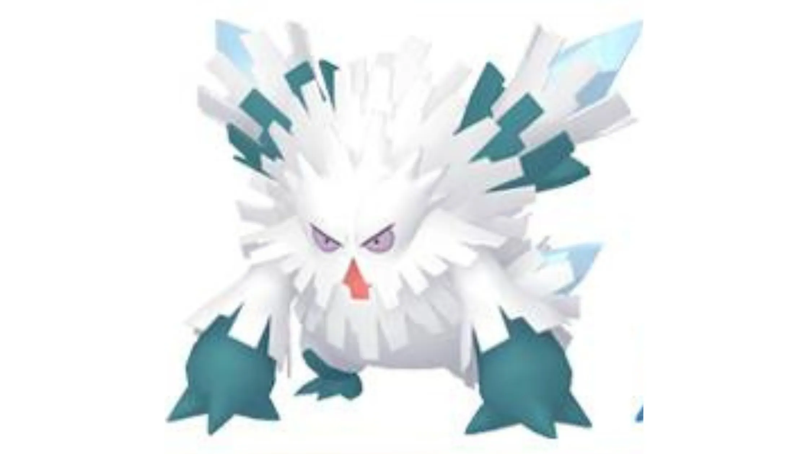
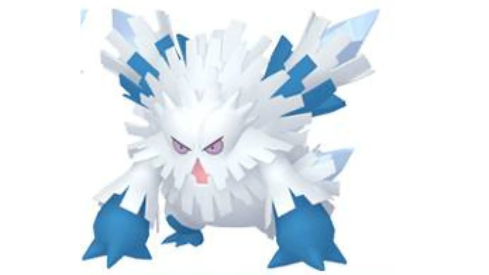

🧭 Quick Navigation
📖 Introduction
Mega Abomasnow can be surprisingly easy to defeat if you take advantage of its double weakness to Fire-type attacks, making it a great raid for quick wins.
The Mega Evolution of Abomasnow, Mega Abomasnow is one of the more interesting Mega Raid bosses in Pokémon GO.
Mega Abomasnow is a powerful Grass and Ice type Pokémon that appears in Mega Raids in Pokémon GO. When trainers defeat this raid boss, they earn Mega Energy that allows them to Mega Evolve their own Abomasnow.
However, this typing also gives Mega Abomasnow a major disadvantage: it takes extremely high damage from Fire-type moves. Because Fire attacks deal quadruple damage, trainers using strong Fire Pokémon can defeat this raid boss very quickly.
Although the raid boss has a relatively high CP and strong moves like Blizzard and Energy Ball, it also has a major weakness that makes the battle easier for experienced trainers. Fire-type Pokémon deal extremely high damage to Mega Abomasnow, making them the most reliable counters.
This guide will help players understand Mega Abomasnow’s weaknesses, the best Pokémon to use as counters, optimal raid strategies, and how to maximize rewards after the raid. Whether you are a new trainer or an experienced player preparing a powerful raid team, this guide will help you defeat Mega Abomasnow efficiently.
Related guides: Mega Victreebel | Mega Pinsir
💡 Expert Insight
Mega Abomasnow is one of the easiest Mega raids due to its double weakness to Fire. Even mid-level players can defeat it quickly if they focus on Fire-type attackers. Compared to other Mega raids, this makes it one of the best targets for farming Mega Energy efficiently.
From a strategy perspective, coordinating one Mega Fire Pokémon per team provides the biggest advantage. This boosts all Fire-type damage in the raid and significantly reduces completion time.
Raid Difficulty
This raid typically requires 3–5 trainers depending on player level, counters, and weather conditions.
📊 Mega Abomasnow Stats
| Type | Grass / Ice |
| Max CP | 3850 |
| Weather Boost | Sunny, Snowy |
| Shiny | Yes |
| Base Attack | 240 |
| Base Defence | 191 |
| Base Stamina | 207 |
🧬 About Mega Abomasnow in Pokémon GO
Mega Abomasnow is considered a medium difficulty Mega Raid boss. With the right Fire-type counters, a small group of trainers can defeat it without major difficulty. However, players should still prepare strong teams because its Ice-type attacks can deal significant damage.
Mega Abomasnow is useful because:
- It is especially useful against Dragon, Ground, and Water-type raid bosses
- It is relatively easy to defeat compared to other Mega Pokémon
🎯 Catch CP & 100% IV
After defeating Mega Abomasnow, you will catch a normal Abomasnow.
CP Range:
- No Weather Boost: 1,863-1,946 CP
- Weather Boost: 2,329-2,432 CP
100% IV:
If you encounter an Abomasnow with these CP values after the raid, it has perfect IVs and is considered a very rare and valuable catch.
- 1946 (Normal)
- 2432 (Weather Boosted)
Use:
- Golden Razz Berry
- Curveball Excellent Throws
⚠️ Mega Abomasnow Weaknesses
Notes: Mega Abomasnow has several weaknesses because of its dual Grass and Ice typing. The most important weakness is Fire. Fire-type attacks deal double super-effective damage because both Grass and Ice types are weak to Fire.
Because of this double weakness, Fire Pokémon are by far the best choice in this raid. Even average Fire-type attackers can defeat Mega Abomasnow quickly. Other types such as Fighting and Rock can still deal strong damage, but they are not as efficient as Fire attackers.
| Category | Details |
|---|---|
| ❌ Double Weak To: |
 Fire Fire
|
| ❌ Weak To: |
 Fighting • Fighting •
 Poison • Poison •
 Flying • Flying •
 Rock • Rock •
 Bug • Bug •
 Steel Steel
|
| ✅ Resistant To: |
 Ground • Ground •
 Water • Water •
 Grass • Grass •
 Electric Electric
|
Notes: Because of these resistances, trainers should avoid using Pokémon that rely heavily on Water or Electric attacks. These moves will deal reduced damage and make the raid battle take longer than necessary.
🗡️ Best Counters for Mega Abomasnow
To defeat Mega Abomasnow efficiently, prioritize strong Fire-type attackers. Other super-effective types can help, but none match Fire’s damage output.
🔥Fire-Type Counters (Top Priority)
Fire-type Pokémon are by far the strongest choice in this raid. Fast moves like Fire Spin combined with powerful charged moves such as Blast Burn or Overheat deal massive damage due to the double weakness.
Mega Fire-type Pokémon are extremely valuable. If one trainer activates a Mega Fire Pokémon, all other Fire-type attackers in the raid receive a damage boost. Coordinated Mega boosts can end the raid very quickly.
- Blaziken: (Fire Spin / Blast Burn)
- Charizard Y: (Fire Spin / Blast Burn)
- Chandelure: (Fire Spin / Overheat)
- Darmanitan: (Fire Fang / Overheat)
Mega Blaziken delivers extremely high Fire-type DPS while boosting other Fire attackers in the lobby. Its Mega boost increases overall team damage, making it ideal for coordinated groups.
In Sunny weather, Mega Charizard Y becomes one of the strongest possible raid attackers due to weather-boosted Fire damage. It also boosts Fire-type teammates.
Chandelure provides strong Fire DPS at a lower investment cost than Legendaries. Excellent option for budget players.
Darmanitan has extremely high Attack. Although fragile, it can shred Mega Abomasnow’s HP bar quickly.
Why Fire Counters Dominate:
- 4× super effective damage
- Sunny weather boost
- High DPS fast moves
- Most Fire types resist Ice attacks
Fire attackers dramatically outperform Fighting, Rock, or Steel Pokémon in this raid.
🥊 Fighting-Type Counters
Fighting Pokémon deal super-effective damage to Mega Abomasnow’s Ice typing. They are solid alternatives if Fire teams are limited, but they do not perform as efficiently as Fire attackers.
- Lucario: (Force Palm / Aura Sphere)
One of the highest Fighting DPS Pokémon
🪨 Rock-Type Counters
Useful especially in snow weather when Fire types lose advantage.
- Rampardos: (Smack Down / Rock Slide)
- Rhyperior: (Smack Down / Rock Wrecker)
Extremely fast raid damage
Strong consistent damage
Mega Abomasnow’s dual Grass/Ice typing makes it especially weak to Fire and Fighting moves. Fire types perform super-effective damage while resisting Ice attacks, making them prime choices in most scenarios.
🏆 Best Regular Counters
Regular Pokémon that amplify the right types give you a powerful edge. Below are top Regular counters with short notes on why they excel.
| Pokémon | 🗡️ Fast Moves | 💥 Charged Moves | 🔄 Elite Moves | 🏆 Best Moves | 🧪 Why This Counter Works |
|---|---|---|---|---|---|
| Zacian | Metal Claw / Air Slash | Play Rough / Close Combat / Giga Impact / Behemoth Blade | None | Metal Claw and Behemoth Blade | Steel-type Behemoth Blade hits Ice typing super effectively, while Zacian’s high Attack stat provides strong neutral pressure. |
| Delphox | Scratch / Fire Spin / Zen Headbutt | Flamethrower / Flame Charge / Fire Blast / Mystical Fire / Psychic / Payback | Blast Burn | Fire Spin and Blast Burn | Fire Spin + Blast Burn exploits Abomasnow’s 4× Fire weakness, delivering extremely high DPS. |
| Moltres | Wing Attack / Fire Spin | Ancient Power / Fire Blast / Heat Wave / Overheat | Sky Attack | Fire Spin and Overheat | Fire Spin + Overheat deals massive double super-effective Fire damage while Flying typing resists Grass moves. |
| Darmanitan | Tackle / Fire Fang / Incinerate | Focus Blast / Rock Slide / Overheat / Psychic | None | Fire Fang and Overheat | High Attack stat combined with Fire Fang + Overheat melts Mega Abomasnow due to its 4× Fire weakness. |
| Chandelure | Hex / Fire Spin / Incinerate | Shadow Ball / Overheat / Flame Charge / Energy Ball | Poltergeist | Fire Spin and Overheat | Fire Spin + Overheat provides powerful Fire DPS, and its Ghost typing resists Fighting moves. |
| Blaziken | Counter / Fire Spin / Ember | Focus Blast / Aura Sphere / Brave Bird / Overheat / Blaze Kick | Stone Edge / Blast Burn | Fire Spin and Blast Burn | Fire Spin + Blast Burn deals 4× super-effective damage; Fighting sub-typing adds additional coverage against Ice. |
| Volcarona | Bug Bite / Fire Spin | Hurricane / Bug Buzz / Overheat / Solar Beam | None | Fire Spin and Overheat | Fire Spin + Overheat fully exploits the 4× Fire weakness while Bug typing resists Grass attacks. |
| Heatran | Bug Bite / Fire Spin | Earth Power / Stone Edge / Iron Head / Fire Blast / Flamethrower | Magma Storm | Fire Spin and Magma Storm | Fire Spin + Magma Storm deals massive Fire damage, and Steel typing resists Ice moves for strong survivability. |
| Reshiram | Fire Fang / Dragon Breath | Stone Edge / Overheat / Draco Meteor / Crunch | Fusion Flare | Fire Fang and Fusion Flare | Fire Fang + Fusion Flare delivers extremely high Fire DPS, making it one of the strongest counters available. |
| Blacephalon | Astonish / Incinerate | Shadow Ball / Mystical Fire / Overheat | Mind Blown | Incinerate and Mind Blown | Incinerate + Mind Blown hits the double Fire weakness hard, though it trades bulk for maximum DPS. |
👤 Best Shadow Counters
Shadow Pokémon that amplify the right types give you a powerful edge. Below are top Shadow counters with short notes on why they excel.
| Pokémon | 🗡️ Fast Moves | 💥 Charged Moves | 🔄 Elite Moves | 🏆 Best Moves | 🧪 Why This Counter Works |
|---|---|---|---|---|---|
| Shadow Heatran | Bug Bite / Fire Spin | Earth Power / Stone Edge / Iron Head / Fire Blast / Flamethrower | Magma Storm | Fire Spin and Magma Storm | Shadow boost + Fire Spin + Magma Storm results in massive Fire DPS while resisting Ice damage. |
| Shadow Blaziken | Counter / Fire Spin / Ember | Focus Blast / Aura Sphere / Brave Bird / Overheat / Blaze Kick | Stone Edge / Blast Burn | Fire Spin and Blast Burn | Shadow boost enhances Blast Burn damage, making it one of the fastest Fire attackers in the raid. |
| Shadow Chandelure | Hex / Fire Spin / Incinerate | Shadow Ball / Overheat / Flame Charge / Energy Ball | Poltergeist | Fire Spin and Overheat | Shadow-boosted Fire Spin + Overheat deals extreme damage to Abomasnow’s double weakness. |
| Shadow Darmanitan | Tackle / Fire Fang / Incinerate | Focus Blast / Rock Slide / Overheat / Psychic | None | Fire Fang and Overheat | Very high base Attack combined with Shadow boost creates incredible Fire burst damage. |
| Shadow Emboar | Low Kick / Ember | Focus Blast / Rock Slide / Heat Wave / Flame Charge | Blast Burn | Ember and Blast Burn | Shadow Blast Burn hits 4× super effectively while Fighting typing adds extra Ice pressure. |
| Shadow Entei | Fire Spin / Fire Fang | Scorching Sands / Iron Head / Flamethrower / Fire Blast / Overheat / Flame Charge | None | Fire Spin and Overheat | Shadow Fire Spin + Overheat provides consistent high Fire DPS with decent bulk. |
| Shadow Moltres | Wing Attack / Fire Spin | Ancient Power / Fire Blast / Heat Wave / Overheat | Sky Attack | Fire Spin and Overheat | Shadow Fire Spin + Overheat melts Abomasnow quickly, with Flying typing resisting Grass. |
| Shadow Infernape | Rock Smash / Fire Spin | Close Combat / Flamethrower / Solar Beam | Blast Burn | Fire Spin and Blast Burn | Fire Spin + Blast Burn benefits from both Fire double weakness and Shadow attack boost. |
| Shadow Charizard | Air Slash / Fire Spin | Air Cutter / Fire Blast / Overheat / Dragon Claw | Wing Attack / Ember / Dragon Breath / Blast Burn / Flamethrower | Fire Spin and Blast Burn | Shadow Blast Burn deals massive Fire damage while resisting Grass-type attacks. |
| Shadow Ho-Oh | Hidden Power / Steel Wing / Incinerate / Extrasensory | Brave Bird / Fire Blast / Solar Beam | Earthquake / Sacred Fire | Incinerate and Sacred Fire | Incinerate + Sacred Fire with Shadow boost delivers strong Fire DPS with solid bulk. |
| Shadow Typhlosion | Shadow Claw / Ember / Incinerate | Fire Blast / Overheat / Solar Beam / Thunder Punch | Blast Burn | Incinerate and Blast Burn | Shadow Incinerate + Blast Burn produces extremely fast Fire damage output. |
| Shadow Magmortar | Karate Chop / Fire Spin | Brick Break / Scorching Sands / Fire Punch / Fire Blast / Psychic | Thunderbolt | Fire Spin and Fire Blast | Shadow Fire Spin + Fire Blast heavily punishes the 4× Fire weakness. |
| Shadow Arcanine | Fire Fang / Thunder Fang / Snarl | Scorching Sands / Fire Blast / Flamethrower / Wild Charge / Psychic Fangs / Crunch | Bite / Bulldoze | Fire Fang and Flamethrower | Shadow Fire Fang + Flamethrower provides reliable Fire-type DPS against the double weakness. |
⚡ Best Mega Counters
Mega Pokémon that amplify the right types give you a powerful edge. Below are top Mega counters with short notes on why they excel.
| Pokémon | 🗡️ Fast Moves | 💥 Charged Moves | 🔄 Elite Moves | 🏆 Best Moves | 🧪 Why This Counter Works |
|---|---|---|---|---|---|
| Mega Lucario | Counter / Bullet Punch | Close Combat / Power-Up Punch / Aura Sphere / Shadow Ball / Flash Cannon / Meteor Mash / Blaze Kick / Thunder Punch | Force Palm | Force Palm and Aura Sphere | Force Palm + Aura Sphere hits Ice typing super effectively while boosting Fighting-type teammates. |
| Mega Charizard X | Air Slash / Fire Spin | Dragon Claw / Fire Blast / Air Cutter / Overheat | Dragon Breath / Ember / Wing Attack / Flamethrower / Blast Burn | Fire Spin and Blast Burn | Fire Spin + Blast Burn exploits the 4× Fire weakness and boosts allied Fire attackers. |
| Mega Charizard Y | Air Slash / Fire Spin | Dragon Claw / Fire Blast / Air Cutter / Overheat | Dragon Breath / Ember / Wing Attack / Flamethrower / Blast Burn | Fire Spin and Blast Burn | One of the strongest Fire Megas; Blast Burn deals huge double super-effective damage while boosting team Fire DPS. |
| Mega Houndoom | Fire Fang / Snarl | Fire Blast / Flamethrower / Crunch / Foul Play | None | Fire Fang and Flamethrower | Fire Fang + Flamethrower hits the 4× Fire weakness and boosts Fire-type teammates. |
| Mega Blaziken | Counter / Fire Spin / Ember | Focus Blast / Aura Sphere / Brave Bird / Overheat / Blaze Kick | Stone Edge / Blast Burn | Fire Spin and Blast Burn | Blast Burn delivers extreme Fire DPS while boosting both Fire and Fighting teammates. |
🌀 Mega Abomasnow Moveset
Mega Abomasnow has several moves available in Pokémon GO raids. Its moves include both Grass-type and Ice-type attacks.
🗡️ Fast Moves
- Razor Leaf
- Leafage
- Powder Snow
💥 Charged Moves
- Energy Ball
- Blizzard
- Outrage
- Weather Ball
- Icy Wind
Pro tip: Blizzard and Weather Ball (Ice) can seriously hurt unprepared or under-leveled counters, especially Dragons and Flyers.
The most dangerous move is Blizzard, especially if undodged, as it can heavily damage Fire-type attackers.
🎮 Is Mega Abomasnow Good?
PvE (Raids)
Mega Abomasnow boosts Grass and Ice damage for your team. It is situationally useful against:
- Ground types
- Dragon types
- Water types
PvP
Regular Abomasnow is strong in Great League and Ultra League thanks to:
- Weather Ball (Ice)
- Energy Ball
It counters popular Water and Ground Pokémon.
Beginner Guide to Mega Evolution
To Mega Evolve:
- Win Mega Raid
- Collect Mega Energy
- Use 200 Mega Energy first time
- Future Mega Evolutions cost less
Mega Evolution lasts 8 hours.
🌦️ Weather Boost
Weather conditions can affect both the power of the raid boss and the CP of the Pokémon you catch afterward:
☀️ Sunny Weather
- Boosts Fire-type attacks.
- Makes raid significantly easier.
- Allows smaller groups (2–3 high-level trainers).
☁️ Cloudy Weather
- Boosts Fighting-type counters
🌨️ Snowy Weather
- Boosts Ice-type moves from Mega Abomasnow.
- Makes Blizzard much more dangerous.
- Avoid Grass counters entirely.
During these weather conditions, Abomasnow will appear with higher CP after the raid. Weather boosts also increase the power of certain moves during battle.
Tips to Catch Abomasnow After the Raid
After defeating the raid boss, trainers have a limited number of Premier Balls to catch Abomasnow. Using the right techniques greatly increases your chances of success.
- Use Golden Razz Berries for higher catch rates
- Aim for Excellent throws whenever possible
- Use curveball throws for extra catch bonus
Combining these techniques significantly improves capture success rates.
💊 Revive & Potion Cost
- Average revives used: 8–14
- Average potions used: 10–18
- Dodging significantly reduces resource usage
- Using Mega Pokémon reduces total relobbies
❌ Common Raid Mistakes
Avoid using fragile Water or Ice attackers—they'll often be outpaced by Abomasnow's high damage. Also be cautious with Ghost types if Abomasnow runs Crunch.
👥 Raid Difficulty & Trainers Needed
- Start with strongest Fire-type attacker
- Follow with two additional Fire Pokémon
- Add one Fighting-type as backup
- Finish with remaining Fire attackers
Avoid Water, Grass, or Ground Pokémon, as Mega Abomasnow resists those types.
Mega Abomasnow is generally easier than many other Mega raids because of its severe double weakness.
- 2 Trainers: Very possible with strong Fire teams
- 3 Trainers: Comfortable clear
- 4+ Trainers: Very easy win
High-level trainers using optimized Fire counters can defeat Mega Abomasnow quickly, especially under Sunny weather conditions.
Even with a smaller group (2–3 trainers) and sunny weather (boosting Fire damage), high-level Fire types can defeat Mega Abomasnow fairly quickly.
🧩 Best Team Compositions
Fast Clear Team (2–4 Trainers)
- Mega Blaziken
- Mega Charizard Y (Fire Blast or Flamethrower)
- Reshiram
- Shadow Heatran
Budget Counters (For New Players)
- Heatran
- Chandelure
- Flareon
- Blaziken
These are affordable and effective.
🧠 Best Strategy to Defeat Mega Abomasnow:
1. Build a Full Fire Team
Fire-types deal massive super-effective damage. Even mid-tier Fire attackers can perform well in this raid.
2. Watch for Ice-Type Charged Moves
Mega Abomasnow may use powerful Ice-type charged moves. While Fire Pokémon resist Ice, non-Fire counters may take heavy damage. Prioritize Fire types to maximize both offense and survivability.
3. Mega Evolution Coordination
Only one Mega boost is required at a time. Coordinate with your group to maintain a continuous Fire-type boost throughout the battle.
The most important factor in defeating Mega Abomasnow is maximizing Fire-type damage. Because of its double weakness, strong Fire-type attackers such as Mega Charizard, Mega Blaziken, or Reshiram can deal extremely high damage per second (DPS). Prioritize Pokémon with powerful Fire-type fast and charged moves rather than mixed-type sets.
If Sunny weather is active, Fire-type attacks receive a weather boost, significantly reducing the time required to defeat the raid boss. In contrast, Snowy weather will boost Abomasnow’s Ice-type attacks, increasing incoming damage. During Snowy conditions, make sure your team has strong resistances and avoid fragile glass-cannon attackers unless you can dodge consistently.
For lower-level trainers, coordinating with at least 3–5 players is recommended. High-level trainers with optimized Fire-type teams may complete the raid with fewer players, but group play ensures faster clears and more Mega Energy rewards.
Dodging charged Ice-type moves such as Blizzard can greatly extend your team’s survival time. If using Mega Evolutions, prioritize one Mega Fire-type to boost all Fire-type allies on the battlefield for maximum efficiency.
Overall, Mega Abomasnow is considered one of the more manageable Mega raids due to its double weakness. With proper Fire-type preparation and awareness of weather conditions, this raid can be completed smoothly even without a full lobby.
Duo Strategy
Two experienced trainers using strong Fire-type attackers and Mega boosts can defeat Mega Abomasnow without much difficulty.
Trio Strategy
Three trainers with mid-level counters should comfortably defeat the raid boss.
Beginner Strategy
If you are a new player, join a group of four or more trainers and focus on using Fire-type Pokémon whenever possible.
✨ Can Mega Abomasnow Be Shiny in Pokémon GO?
Yes, trainers can encounter a Shiny Abomasnow after defeating Mega Abomasnow in a raid battle. While Mega Abomasnow itself cannot be caught, players will encounter the regular Abomasnow after the raid, which has a chance of being shiny.
Shiny Abomasnow has a darker blue color compared to the normal version, making it visually distinct and highly desired by collectors in Pokémon GO.
The shiny rate for Mega Raids is generally higher than standard wild encounters, so participating in multiple raids increases the chance of obtaining a shiny version.
Evolution, Mega Details & Buddy Distance
| Evolution Line | Base(Snover) → Final(Abomasnow) → Mega(Abomasnow) |
| Mega Energy (First) | 200 |
| Subsequent Cost | 40 |
| Buddy Distance | 3 km |
| Mega Energy via Buddy | Yes |
| Mega Boost Bonus(Walking) | Extra Candy |
| Mega Boost Bonus(Catch) | Extra Grass/Ice-type Candy |
| Mega Boost Bonus(Buddy^) | 5 Mega Energy per candy |
🚶 Buddy Distance
3 km (per Pokémon GO buddy distance)
⚖️ Shadow & Mega Comparison
🧬 Best Mega Evolutions
Recommended Megas to use against Mega Abomasnow:
- Blaziken, Charizard Y, Charizard X, Houndoom – 🔥 Fire boost
- Lucario – 🥊 Fighting boost
🎁 Rewards
Defeating Mega Abomasnow in a Mega Raid in Pokémon GO gives trainers several useful rewards. These items help power up Pokémon, heal teams, and prepare for future battles.
| Reward | Typical Amount | Description |
|---|---|---|
| Golden Razz Berry | 3 – 12 | Greatly increases catch chance when used on Pokémon. |
| Rare Candy | 3 – 9 | Can be converted into candy for any Pokémon. |
| Revive | 6 – 15 | Revives fainted Pokémon after raid battles. |
| Hyper Potion | 6 – 15 | Restores Pokémon HP after battle. |
| Fast TM | 0 – 2 | Allows trainers to change a Pokémon’s Fast Move. |
| Charged TM | 0 – 2 | Allows trainers to change a Pokémon’s Charged Move. |
| Stardust | 1000+ | Used to power up Pokémon. |
Mega Energy Reward
Trainers will also receive Mega Abomasnow Mega Energy after defeating the raid boss. The amount depends on how quickly the raid is completed.
| Raid Completion Time | Mega Energy Reward |
|---|---|
| Fast completion | 200+ Mega Energy |
| Average completion | 150 – 200 Mega Energy |
| Slow completion | 100 – 150 Mega Energy |
Premier Balls
After defeating Mega Abomasnow, trainers receive Premier Balls to catch Abomasnow. The number of balls depends on damage contribution, gym control, and friendship bonuses.
- Damage contribution bonus
- Gym control bonus
- Friendship bonus
📌 Should You Raid Mega Abomasnow?
Pros:
- Useful Mega boost for Grass and Ice teams
- Easy Mega energy farming
- Shiny chance available
Cons:
- Not a top meta Mega attacker
- Limited PvP impact
Mega Abomasnow is worth raiding mainly for Mega Energy collection and Pokédex completion rather than long-term raid dominance.
Beginner Tips for Mega Abomasnow Raids
- Always use Fire-type Pokémon whenever possible.
- Bring at least one Mega Fire Pokémon to boost team damage.
- Try to dodge powerful moves like Blizzard.
- Raid with friends to finish the battle faster.
- Use Golden Razz Berries when catching Abomasnow.
Tips & Tricks
- Use Pokémon with high DPS to reduce battle duration.
- Focus on Mega Abomasnow’s Ice-type moves for effective dodging.
- Coordinate with other trainers in large raids for easier victory.
🖼️ Regular vs Shiny Mega Abomasnow Forms
The shiny version of Mega Abomasnow has darker blue highlights compared to the regular version. Shiny Pokémon are rare and can only be encountered after completing the raid.

Normal Snover
Images are used for informational and educational purposes only. All rights belong to their respective owners.

Shiny Snover
Images are used for informational and educational purposes only. All rights belong to their respective owners.

Normal Abomasnow
Images are used for informational and educational purposes only. All rights belong to their respective owners.

Shiny Abomasnow
Images are used for informational and educational purposes only. All rights belong to their respective owners.

Mega Abomasnow
Images are used for informational and educational purposes only. All rights belong to their respective owners.

Shiny Mega Abomasnow
Images are used for informational and educational purposes only. All rights belong to their respective owners.
❓ FAQ
Can Mega Abomasnow be shiny in Pokémon GO?
Yes, Shiny Abomasnow is available in Pokémon GO and can be encountered after defeating Mega Abomasnow in raids.
Is Mega Abomasnow difficult to defeat?
It has high attack and decent HP. Using type-advantage Pokémon ensures the battle is manageable and efficient.
Can I defeat Mega Abomasnow solo?
Only possible with max-level counters and perfect dodging. Otherwise, team up for faster victory.
Which attack is most dangerous?
Blizzard hits hard and frequently. Dodging is recommended.
Does Mega Abomasnow keep its Mega form after the battle?
No, Mega Evolution only lasts during battle and expires afterward.
What makes Mega Abomasnow unique?
Its towering ice-covered form, Grass/Ice typing, and powerful Blizzard attacks make Mega Abomasnow visually striking and strategically challenging in Pokémon GO raid battles.
What is Mega Abomasnow’s exclusive move?
Mega Abomasnow can use powerful moves like Blizzard, dealing massive damage and affecting multiple opponents in Pokémon GO raid battles.
🏁 Conclusion
Fire-types deal massive super-effective damage. Stack Fire-type attackers, coordinate Mega boosts, and aim for Sunny weather for maximum efficiency.
With proper preparation, you can defeat Mega Abomasnow quickly and collect valuable Mega Energy for future battles.
- Fire-type Pokémon are by far the best counters.
- Bring a Fire Mega if possible to help everyone.
- Watch out for Blizzard and Ice Weather Ball.
- Keep your team aggressive and fast.
⚡Quick picks
- Best Mega Team: Blaziken, Charizard X, Charizard Y
- Best Shadow Team: Darmanitan, Chandelure, Blaziken
- Best Regular Team: Blacephalon, Volcarona